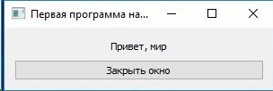

# coding: utf-8
import sys
from PyQt4 import QtGui, QtCore
if __name__ == '__main__':
app = QtGui.QApplication(sys.argv) # create object of application
print(QtGui.qApp.argv()) # print sequence of application's arguments
window = QtGui.QWidget() # create window
window.setWindowTitle("Первая программа на PyQt") # set title of window
window.resize(300, 70) # change size of window
label = QtGui.QLabel("<center>Привет, мир</center>") # create label
btnQuit = QtGui.QPushButton("&Закрыть окно") # create button
vbox = QtGui.QVBoxLayout() # create vertical sizer
vbox.addWidget(label) # add label to sizer
vbox.addWidget(btnQuit) # add button to sizer
window.setLayout(vbox) # set sizer as layout of window
QtCore.QObject.connect(btnQuit, QtCore.SIGNAL('clicked()'), QtGui.qApp, QtCore.SLOT("quit()")) # write command to quit from application in acting on button
window.show() # show window
sys.exit(app.exec_()) # execute application